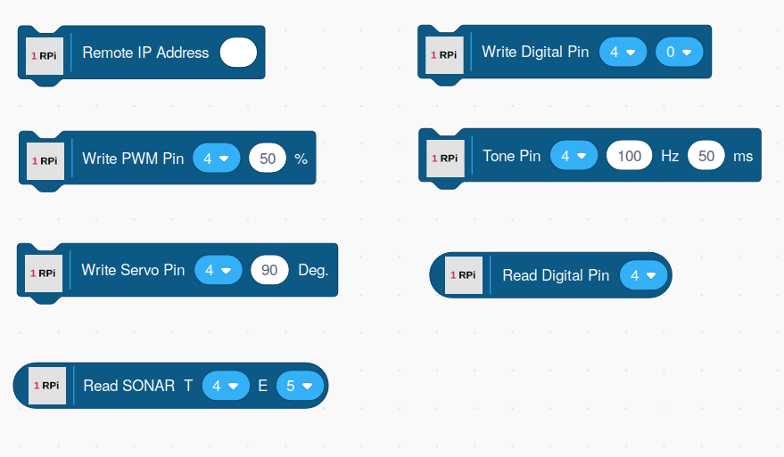
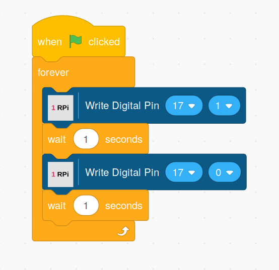

The Raspberry Pi Blocks

The blocks consist of a set of command blocks that are rectangular in shape and reporter blocks rounded in shape.
Connecting To A Local Browser Versus A Remote Browser
For the Raspberry Pi extension, you can run Scratch 3 on a local browser, or from a browser on your PC.
For remote operation, you must specify the Raspberry Pi's WiFi or Ethernet address in the Remote IP Address block.
NOTE: It is recommended that if you wish to access a Raspberry Pi using a remote browser, that you install and use the off-line version of the Scratch 3 OneGPIO editor. The reason is, using an on-line version will most likely result in a security error.
Command Blocks
Remote IP Address
If you wish to control the Raspberry Pi from a browser running on your PC, enter the IP address of the Raspberry Pi into this block. This block should be executed before any of the other Raspberry Pi blocks and executed only once.

If you wish to use a local browser running on the Raspberry Pi, do not use the Remote IP block.

Write Digital
This block allows you to select a pin and set its output to either a one or zero. It has two parameters. The first is a drop-down list of valid PINs. The second parameter is the output value. It also is a drop-down list and contains the values zero and one.
Write PWM
This block allows you to select a pin and set its PWM output to be a value between 0 and 100%. It has two parameters. The first is a drop-down list of valid PINs. The second parameter allows you to fill in a PWM value. If you use a PWM value of less than zero, it will be set to 0 internally. If you set the value to greater than 100, it will be set to 100.
Tone
If you connect a Piezo type buzzer to a pin, this block will generate a tone on the pin for the frequency and duration specified. It contains three parameters. The first is a drop-down list of valid PINs. The second allows you to specify the frequency of the tone in Herz. The third parameter specifies the tone duration in milliseconds. If a value greater than 5000 is entered, the value will be set to 5000 internally, limiting the maximum playing time to 5 seconds.
Write Servo
This block allows you to control the angle of a servo motor. It contains two parameters. The first is a drop-down list of valid PINs. The second specifies the angle in degrees. The value is limited to be between 0 and 180.
Reporter Blocks
Read Digital
This block allows you to read the current state of a digital input pin. It has one parameter, a drop-down list containing all the valid PINs. It reports a value of zero or one.
Read Sonar
This block allows you to connect an HC-SR04 type device. It has two parameters, both containing a drop-down list of valid PINs. The first parameter allows you to select a trigger pin and the second an echo pin. It returns the measured distance in centimeters.
Copyright (C) 2019-2020 Alan Yorinks All Rights Reserved